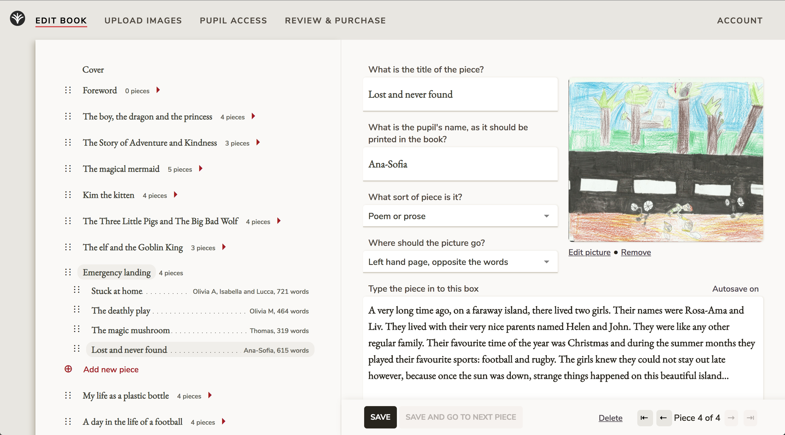
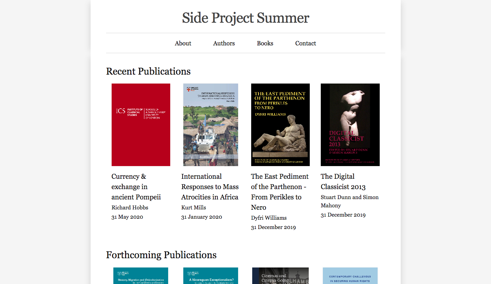

Here's a list of things people are doing for their 2020 Side Project Summer
Side Project Summer is back for its second year after a wide range of publishing people built some amazing technical projects in 2019.
Add your contribution to this showcase – either your 2019 or 2020 project – by opening a pull request!
Follow the instructions on cloning a website on GitHub to take a local copy of this website. Edit the showcase.html file, copying and pasting one of the examples already there to add your own project. Feel free to add screenshots to the images folder and reference them using the <img> HTML tag. Then open a pull request on GitHub, and the General Products maintainers will review it, suggest any changes, and ultimately merge it in.
Make Our Book
Emma Barnes @has_many_books
"I have written makeourbook.com to bring publishing to the classroom. I'm particularly pleased with the use of the table of contents for navigation: it is a chance to improve my JavaScript which is not my strength. I am using React Beautiful DND. This summer I'm working on the Purchase workflow so orders are more automated, and on more layout options for schools." 
University of London Press
Jamie Bowman @jreecebowman
"For Side Project Summer 2019, I tried to get to grips with making API calls in Ruby. I built a site that interacts with the Consonance Product API to fetch metadata for books published by the University of London Press, where I work. I learned plenty of useful stuff about APIs along the way, a lot of which has now become relevant to my role at the Press. Read more about how it works here. Currently in the process of scoping out my project for Side Project Summer 2020!" 